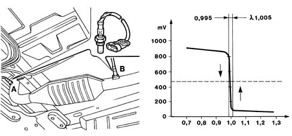
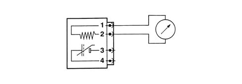

LAMBDA SENSORS
- Path
- Descriptions > 10 ENGINE > 1080 EXHAUST EMISSION CONTROL SYSTEM > 1080B EXHAUST EMISSION CONTROL SYSTEM > LAMBDA SENSORS
- Kind
- system description
- Applies to
- engines: 2.0 16V; all production periods; only with equipment: Methane and GPL
- Interactive page
- https://sloeber94.github.io/elrnDB-fDct/en/#/244000414
Applies to: engines: 2.0 16V; all production periods
LAMBDA SENSOR UPSTREAM OF THE CATALYZER (A)

LAMBDA SENSOR DOWNSTREAM OF THE CATALYZER (B)
